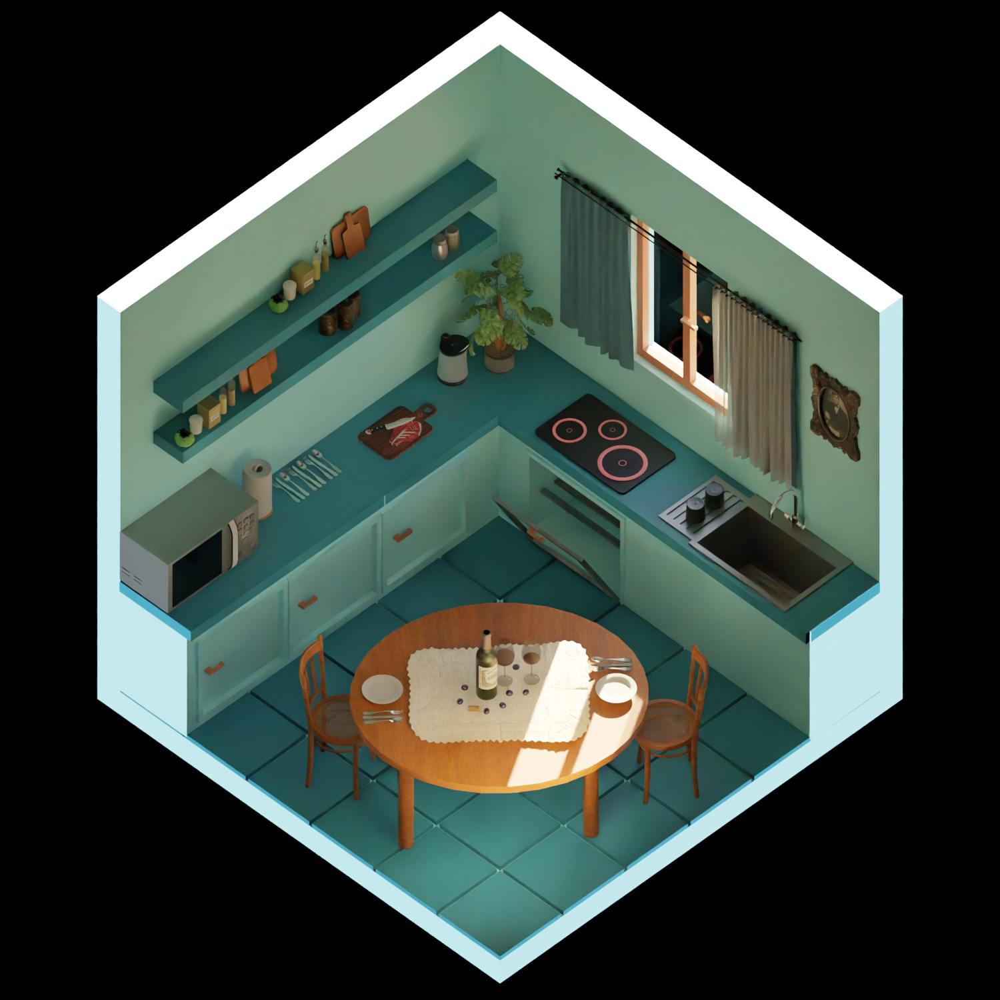
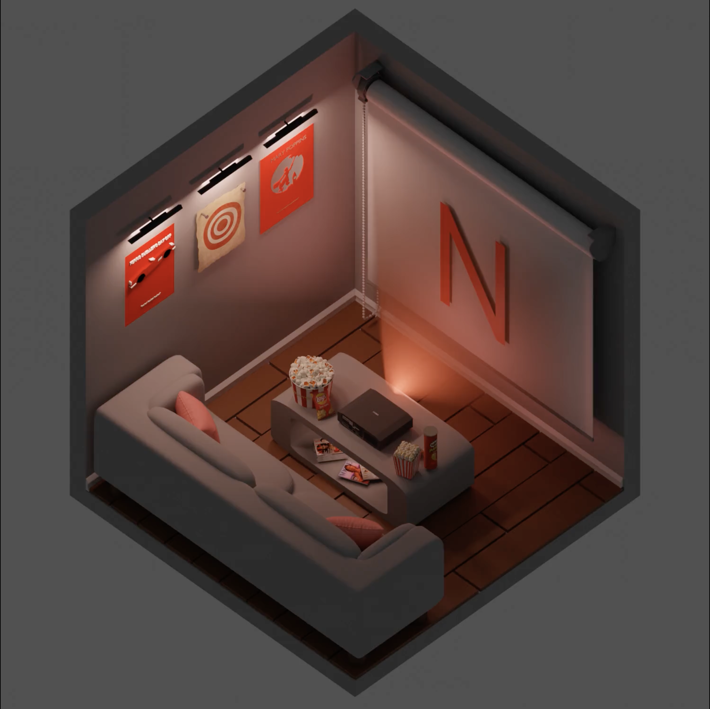
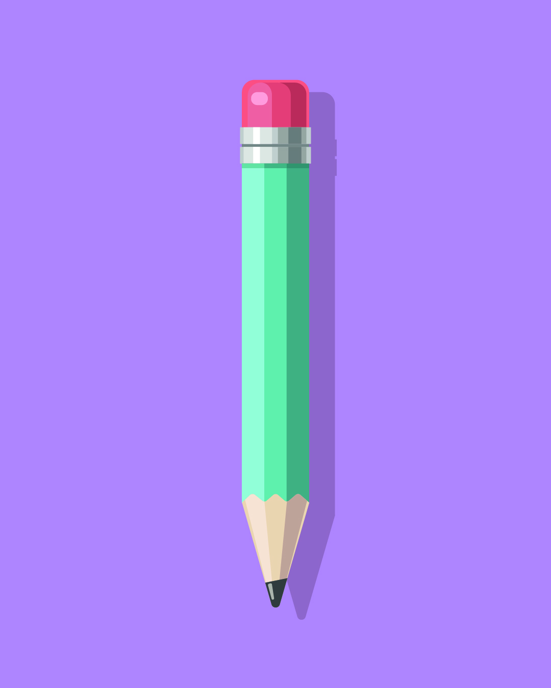
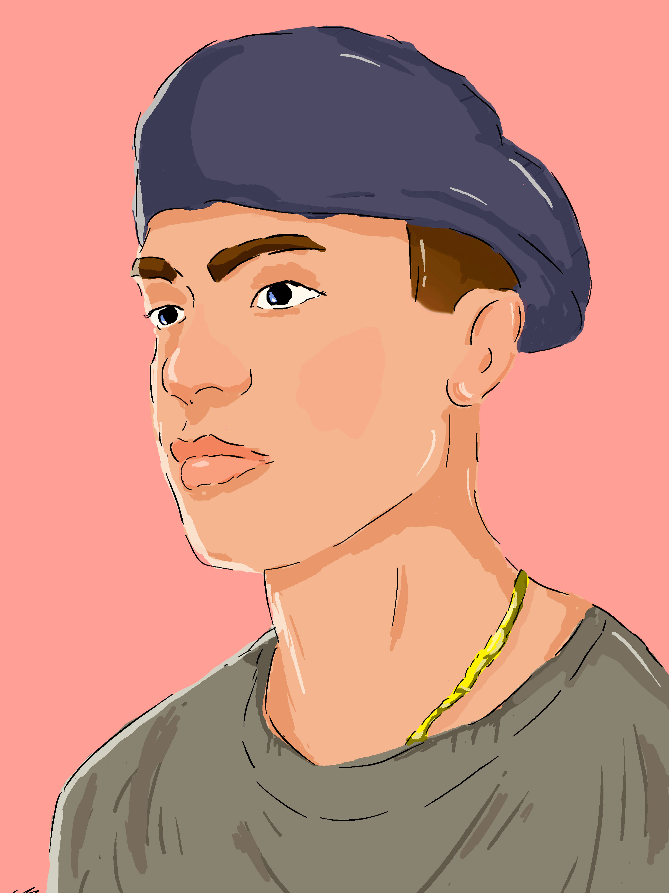
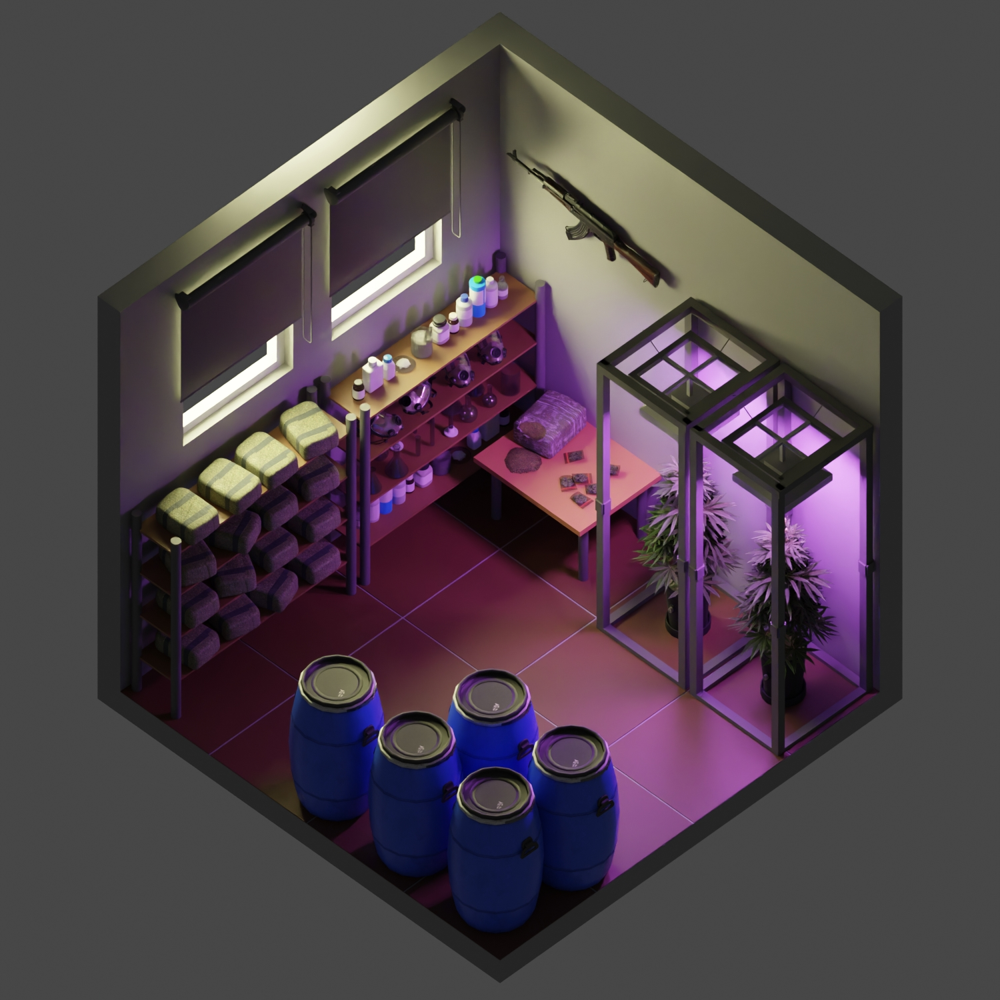
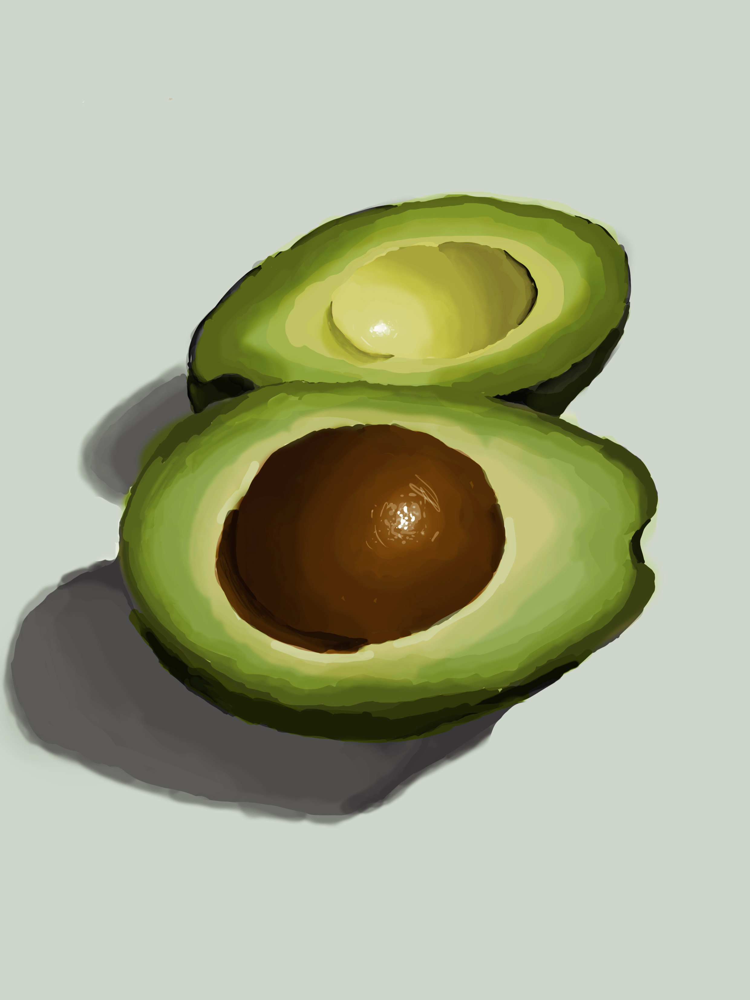
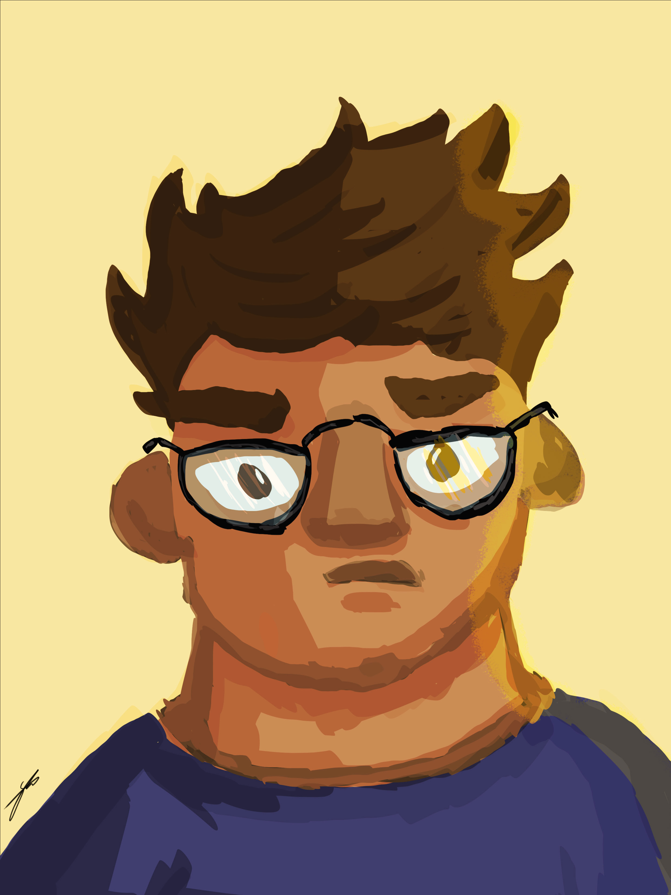

Motion, light, and abstract forms — a visual body of work by Noah Stanarevic.
16 years old, based in Vienna. Student at Die Graphische — one of Austria's most respected schools for media and design. Former footballer turned creative, now channelling that same competitive drive into 3D renders, motion design, and digital illustration. Outside the studio: gym, business, and building something from scratch.
Follow the journey ↗





